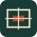

Lokales Netz zuerst
Server und Regie per Kabel. Eigenes WLAN für Tische. Zuschauer-WLAN getrennt halten. Ein WLAN-Symbol sagt nichts über freie Uploadkapazität aus.

SDM 2026Nürnberg24. Oktober 2026 · Nürnberg · DJKB
Die Süddeutsche Meisterschaft 2026 ist beendet. Hier findet ihr die Platzierungen und die Siegerliste – und könnt das Wettkampf Tool selbst ausprobieren.
Kata · Kumite · Einzel · Team
Das Ergebnis zählt
Wanderpokal 2026
Reihenfolge und Gesamtpunkte aus der offiziellen Siegerliste.
Ergebnisse werden geladen. Siegerliste als PDF öffnen.
Selbst an den Tisch
Eine Wertung am Tisch erscheint auf der Hallenanzeige und im Streambild. Öffne mehrere Ansichten im selben Browser und probiere es aus. Die Demo verändert keine Turnierergebnisse.
Die Vorschau zeigt ein animiertes Testbild. Für einen echten Livestream braucht es Kamera, Encoder und einen Streamingdienst.
Die wichtigste Lehre aus Nürnberg
Fehlende Internetkapazität hat den Betrieb bei der SDM erheblich beeinträchtigt. Die technische Grundlage setzt deshalb auf einen lokalen Server: Tische, Anzeigen und Leitung verbinden sich im Hallennetz. Das Internet wird für die Veröffentlichung und den Stream gebraucht.
Server und Regie per Kabel. Eigenes WLAN für Tische. Zuschauer-WLAN getrennt halten. Ein WLAN-Symbol sagt nichts über freie Uploadkapazität aus.
Komprimierte Dateien, bedingte Aktualisierungen und schmale Anzeigeansichten. Änderungen werden mit Befehls-ID und Versionsprüfung gespeichert.
Internet aus: lokal weiterarbeiten. Hallennetz aus: keine unbestätigten Wertungen überspielen. Serverausfall: Papierlisten und geprüfte Backups bereithalten.
Planwert inklusive 0,16 Mbit/s Audio pro Stream. Keine Zusage zur Netzqualität. Den gesamten Aufbau mit bewegtem Kamerabild vor Ort mindestens 30 Minuten testen, Paketverlust und Aussetzer beobachten. Video reduzieren, bevor der Wettkampfbetrieb leidet.
DJKB Wettkampf Tool
Quellcode, lokaler Node.js-Server, Wettkampfkern, Tischoberfläche und Anzeigen sind im öffentlichen GitHub-Projekt verfügbar. Ohne externe Laufzeitdienste und ohne Paketinstallation im Hallenbetrieb.
MIT-Lizenz für den Code. Unabhängiges Community-Projekt; keine offizielle Softwarefreigabe des DJKB.
npm run setup
npm start -- --lanEin Hallenrechner. Ein gemeinsamer Datenstand.